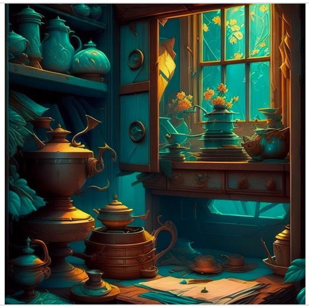

Older Investigations

I'm always thinking... "maybe I'll use this again someday..."
Well, at least this stuff is comforting - and sometimes even inspiring for new ideas - when I look back over projects I've been involved with over the years.